Antes de empezar
De qué se trata la guía y cómo se trabaja con la consola.
El texto guía está pensado para mecánicos y estudiantes del automotor que vienen del mundo de los mecanismos —cosas que se ven, se tocan y se miden con calibre, micrómetro o manómetro— y ahora tienen que lidiar con magnitudes más abstractas: tensión, intensidad de corriente, resistencia, ciclos de trabajo de una señal. El objetivo es aprender a usar el multímetro (también llamado tester o polímetro) para diagnosticar y detectar averías en los sistemas eléctricos y electrónicos del auto.
Método de trabajo
- Se trabaja sobre una consola de mediciones que tiene distintos componentes (resistores, lámparas, potenciómetros) y una fuente de alimentación (la BATERÍA, de unos 12 V).
- Las experiencias están grabadas en la memoria de la consola. El pulsador AVANZA pasa al paso siguiente; el pulsador MARCHA activa la experiencia del paso actual; RESET vuelve al inicio.
- La consola enciende leds al lado de los bornes que tenés que conectar: los del componente, los de la fuente y los del tester. Si un borne no tiene el led prendido, no lo conectes.
- El instrumento principal es el tester; el instructor responde las dudas.
Las partes del tester que vas a usar
El tester de la guía es un M890G de selección manual. Tiene una llave selectora dividida en sectores (cada sector es una función y cada posición dentro del sector es un alcance o escala), un display y cuatro bornes para las puntas:
| Borne | Para qué se usa | Punta |
|---|---|---|
| COM | Común, la referencia de todas las mediciones. | Negra, siempre acá. |
| VΩ | Medir tensión (voltímetro) y resistencia (óhmetro). | Roja |
| mA | Medir corrientes chicas (hasta 200 mA). Tiene fusible. | Roja |
| 20A | Medir corrientes grandes (hasta 20 A). Sin fusible. | Roja |
| Sector de la llave | Sigla en inglés | Qué mide |
|---|---|---|
| V⎓ | DCV — Direct Current Voltage | Tensión de corriente continua |
| V~ | ACV — Alternating Current Voltage | Tensión de corriente alterna |
| A⎓ | DCA — Direct Current Amperage | Intensidad de corriente continua |
| A~ | ACA — Alternating Current Amperage | Intensidad de corriente alterna |
| Ω | — | Resistencia (y prueba de diodos / continuidad) |
Índice de pasos
- PASO 00Encendido y recomendaciones
- PASO 01Tensión eléctrica · voltímetro
- PASO 02Intensidad de corriente · amperímetro
- PASO 03Causa y efecto · Ley de Ohm
- PASO 04El óhmetro
- PASO 05Resistencia de las puntas
- PASO 06Reóstatos y potenciómetros
- PASO 07Predecir la corriente con Ohm
- PASO 08Circuito serie: la corriente
- PASO 09Circuito serie: las tensiones
PASO 00 Encendido y recomendaciones
Antes de tocar un cable.
Al encender la consola, el display muestra «PASO 88» y se prenden todos los leds durante unos segundos: es una prueba de funcionamiento para verificar que no haya leds ni segmentos quemados. Después queda en PASO 00. En cualquier momento podés volver al inicio con RESET.
Recomendaciones de la guía (y por qué)
- Hacé solo las conexiones indicadas en cada paso. Una conexión equivocada puede poner en cortocircuito la fuente o dañar la consola.
- Enchufá las clavijas con cuidado, bien alineadas con el orificio de la hembrilla antes de hacer fuerza.
- Para desconectar, no tires del cable: agarrá el capuchón plástico de la clavija. Tirar del cable lo corta por dentro.
- No desconectes varios cables a la vez: el esfuerzo de tracción se transmite a la placa donde están las hembrillas y la puede dañar.
- Cada vez que cambies de función (por ejemplo, de voltímetro a amperímetro), desconectá una punta del circuito y recién después reconectala. Así evitás que, al girar la llave, el tester quede momentáneamente conectado de forma incorrecta.
- Verificá que la clavija metálica esté bien roscada en el manguito plástico antes de usar un cable.
PASO 01 Tensión eléctrica y el voltímetro
La fuerza que empuja a los electrones.
Teoría
Para que haya corriente eléctrica tiene que existir una fuerza eléctrica que ponga en movimiento a los electrones libres de los materiales conductores. Esa fuerza no sale «de los pulmones de Tuercalín» sino de la TENSIÓN ELÉCTRICA, también llamada DIFERENCIA DE POTENCIAL. Es la que mueve los electrones y permite hacer un trabajo útil: encender una lámpara, hacer girar el rotor de un motor.
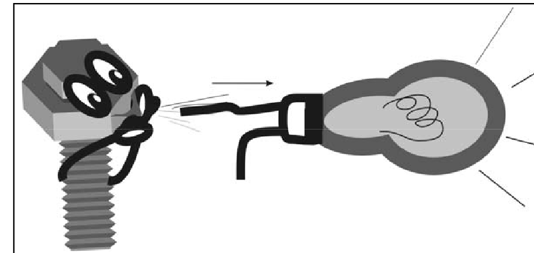
Para recordar
- La tensión eléctrica, actuando como una fuerza electromotriz, impulsa a los electrones libres de los conductores.
- Magnitud: tensión · Símbolo: U o V · Unidad: volt · Símbolo de la unidad: V.
- Se mide con el voltímetro.
El tester como voltímetro
Para usar el tester como voltímetro hay que mirar dos sectores de la llave: V⎓ (DCV) para tensión continua —la de la batería del auto— y V~ (ACV) para tensión alterna —la de la red domiciliaria o la salida de un alternador antes de rectificar—.
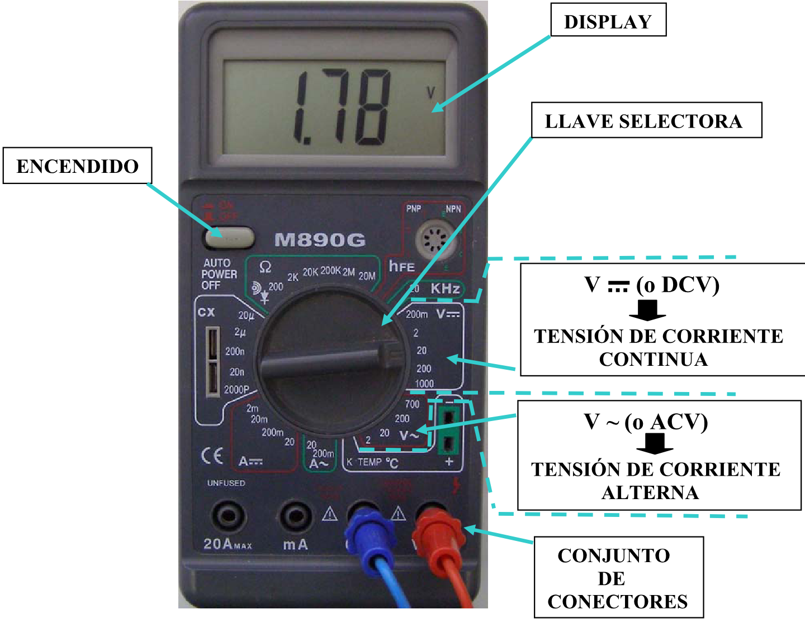
Experiencia: medir la tensión de la batería
Al oprimir MARCHA se prenden los leds de + y − de BATERÍA y los de COM y VΩ del tester.
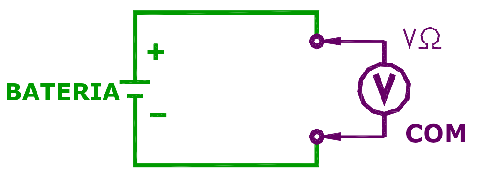
- ASelector en V⎓ / 20.
- BConectar + BATERÍA → VΩ y − BATERÍA → COM. El display debe mostrar algo cercano a 12,xx V (parte entera 12, dos decimales).
- CPasar el selector a 200 V: ahora se lee 12,x V.
- DPasar el selector a 2 V y observar el display.
- EVolver a 20 V.
- FInvertir las puntas: + BATERÍA → COM y − BATERÍA → VΩ. Observar.
- GDesconectar todo y apagar el tester.
¿Cómo sé que la lectura de 12,xx V es correcta? Primero, porque es tensión continua: el selector está en el sector V⎓. Segundo, porque en el alcance 20 el tester puede mostrar entre 0 y 19,99 V, y 12 V cae dentro.
Punto C — alcance 200 V: se lee 12,x V. Se pierde precisión: el display tiene los mismos dígitos pero ahora tiene que cubrir hasta 199,9 V, así que queda un decimal menos. Regla: el mejor alcance es el más chico que sea mayor que el valor a medir.
Punto D — alcance 2 V: el display muestra un «1» solo a la izquierda. Es el aviso de desbordamiento (fuera de rango): en ese alcance el máximo es 1,999 V y la batería tiene 12 V. No es una lectura de 1 volt.
Punto F — puntas invertidas: aparece −12,xx V. El signo menos indica que la polaridad está al revés: el borne COM quedó en el punto de mayor potencial. Al tester digital no le pasa nada; el valor es el mismo. Sirve, de hecho, para descubrir cuál es el positivo de una fuente desconocida.
PASO 02 Intensidad de corriente y el amperímetro
El «caudal» de electrones.
Teoría
Cuando se aplica tensión a un conductor —un alambre de cobre, o el filamento de tungsteno de una lamparita— sus electrones libres se ponen en movimiento: eso es la corriente eléctrica.
La guía usa la analogía del agua en una cañería: así como interesa saber el caudal (cuántos litros pasan por segundo por una sección del caño, lo que permite calcular cuánto tarda en llenarse un tanque), en electricidad interesa saber cuántos electrones pasan por segundo por una sección del conductor (por ejemplo, para calcular cuánto tarda en cargarse un condensador). Ese «caudal de electrones» es la INTENSIDAD DE CORRIENTE ELÉCTRICA.
Para recordar
- La intensidad de corriente representa el caudal de electrones que circulan por segundo por el conductor.
- Magnitud: intensidad de corriente · Símbolo: I · Unidad: ampere · Símbolo de la unidad: A.
- Se mide con el amperímetro, que va en serie.
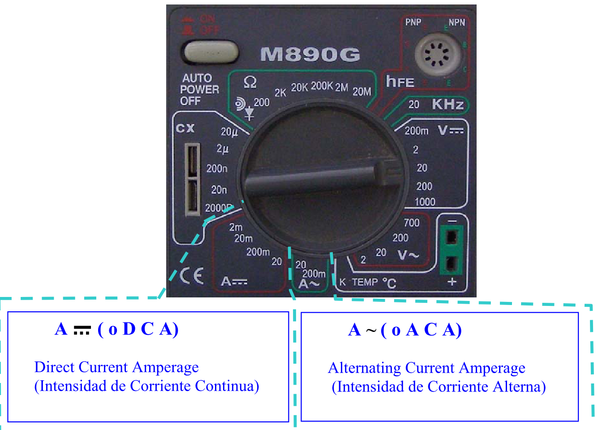
El sentido de la corriente
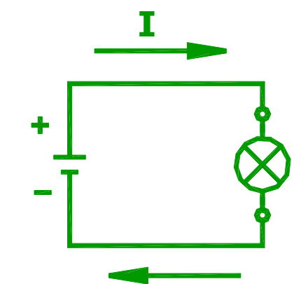
La corriente y sus efectos se conocieron antes de conocer la estructura del átomo. Por eso se supuso que lo que circulaba eran cargas positivas que salían del polo positivo de la fuente y volvían al negativo. Esa convención se mantiene: el sentido convencional de la corriente va del + al − por el circuito exterior. En realidad los que se mueven son los electrones, y lo hacen al revés (del − al +); a eso se lo llama «corriente electrónica», pero solo se usa excepcionalmente.
Experiencia: medir la corriente de una lámpara
Con MARCHA se prenden los leds de la fuente, de la lámpara L1 de la sección 4 y de COM y 20 A del tester.
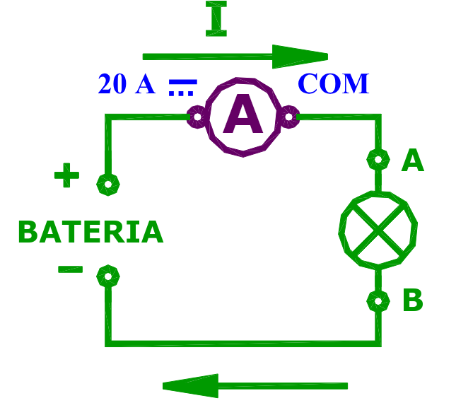
El amperímetro se ubica sobre uno de los conductores de alimentación, de manera que toda la corriente lo atraviese. Por eso se dice que el amperímetro se conecta en serie con el receptor: todo el flujo que pasa por la lámpara tiene que pasar también por el instrumento.
- ASelector en 20 A⎓. Si no conocés el valor de la corriente, empezá siempre por el alcance más alto. Con un alcance chico y una corriente grande se quema el fusible de protección.
- BConectar + BATERÍA → 20A del tester; COM → borne A de la lámpara 1; borne B de la lámpara → − BATERÍA.
- CLeer la corriente.
- DDesconectar todo y apagar el tester.
- EAnalizar el resultado.
- FPregunta: ¿qué pasaría si la punta roja se pasa al borne mA (200 mA máximo) y el selector a 200 mA?
Respuesta al punto F: una lámpara de 12 V consume normalmente bastante más de 200 mA. Si se mide en el borne mA con el selector en 200 mA, la corriente supera lo que soporta esa entrada y se quema el fusible interno del tester (en el mejor de los casos; sin fusible se daña el instrumento). Además el display mostraría desbordamiento. Por eso: primero se mide en 20 A y, si la corriente resulta chica, recién ahí se baja de escala.
PASO 03 Causa y efecto: la Ley de Ohm
La tensión es la causa, la corriente es el efecto, y la resistencia es la relación entre ambas.
Teoría
Todo fenómeno natural tiene una o varias causas que producen uno o varios efectos. La lluvia (efecto) se produce porque hay una masa de aire húmedo a cierta altura (causa).
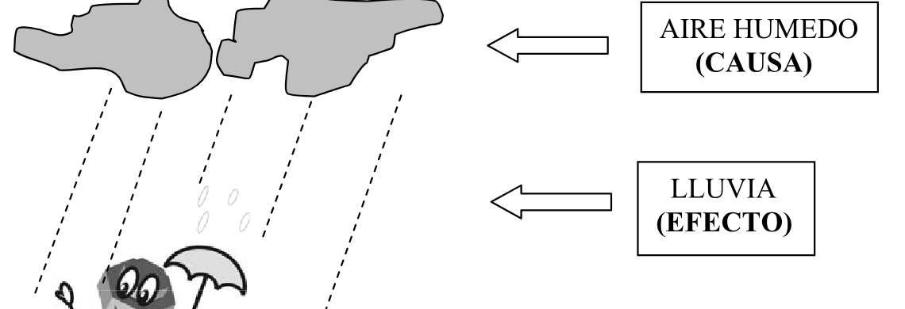
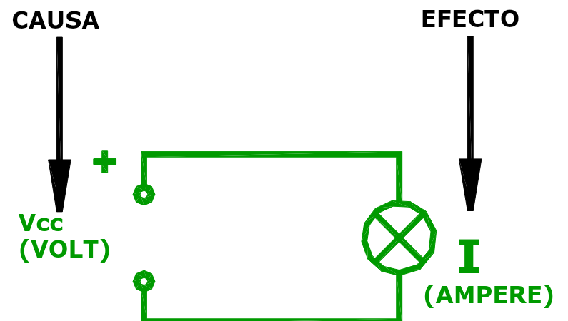
Si conocemos la relación causa/efecto (o su inversa, efecto/causa) podemos predecir: dada una tensión, qué corriente va a circular; o, si necesitamos cierta corriente, qué tensión hay que aplicar.
Hacia 1826 el físico alemán Georg Simon Ohm comprobó que en muchos circuitos eléctricos la relación tensión/intensidad es constante. A ese valor constante lo llamó RESISTENCIA ELÉCTRICA.
R = V / I
El cociente entre la tensión aplicada y la corriente que circula da la resistencia del circuito. Si V está en volt e I en ampere, R queda en ohm (Ω). Intuitivamente: para la misma tensión, un componente con más resistencia deja pasar menos corriente.
Experiencia: medir V e I y calcular R1
Con MARCHA se prenden los leds de la fuente, del resistor R1 de la sección 1 y de COM, 20A y VΩ del tester. La experiencia tiene dos partes: primero medir la corriente, después la tensión.
Parte 1 · Medir I (amperímetro en serie)
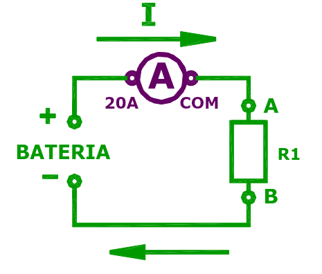
- ASelector en 20 A⎓.
- BConectar: B de R1 → − BATERÍA; A de R1 → COM del tester; 20A del tester → + BATERÍA.
- CLeer I. Si es menor a 0,2 A, apagar el tester, pasar el selector a 200 mA y mover la punta roja del borne 20A al borne mA: así se gana precisión. Anotar I.
Parte 2 · Medir V (voltímetro en paralelo)
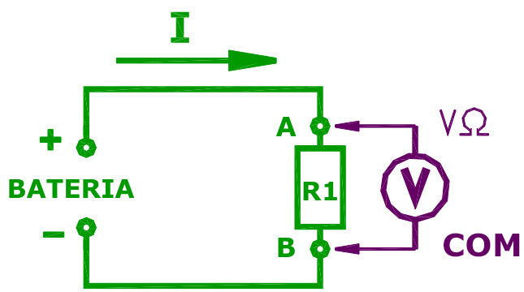
- DSacar el tester del circuito y conectar A de R1 directo a + BATERÍA.
- ESelector en 20 V⎓.
- FEl circuito queda: batería alimentando a R1.
- GConectar B de R1 → COM y A de R1 → VΩ.
- HLeer y anotar V en los terminales de R1.
- ICalcular R1 = V / I.
- JComparar con el valor que da el instructor.
- KDesconectar todo y apagar el tester.
Ojo con las unidades. Si mediste la corriente en la escala de mA, pasala a ampere antes de dividir. Ejemplo con valores ilustrativos: V = 12,3 V e I = 56 mA = 0,056 A → R1 = 12,3 / 0,056 ≈ 220 Ω. Si dividís 12,3 / 56 te da 0,22, que serían kΩ, no Ω.
¿Por qué se cambia de conexión entre una medición y otra? Porque el amperímetro va en serie (la corriente tiene que pasar por él) y el voltímetro va en paralelo (mide la diferencia entre dos puntos sin interrumpir el circuito).
PASO 04 El óhmetro
Medir la resistencia en una sola lectura, sin cuentas.
Teoría
En el paso 03 obtuvimos la resistencia de R1 midiendo V e I y dividiendo. Conocer R permite predecir cómo se va a comportar el componente con cualquier tensión. Es un dato tan importante que existe un instrumento que lo mide directamente: el ÓHMETRO.
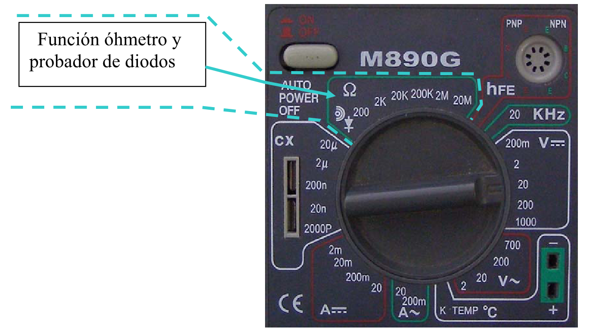
Este tester tiene alcances de 200 Ω, 2 kΩ, 20 kΩ, 200 kΩ, 2 MΩ y 20 MΩ (la guía menciona también 200 MΩ). Hay que elegir el que dé mayor precisión:
- Un alcance demasiado chico produce rebalsamiento o desbordamiento, y el display muestra solo un «1» a la izquierda.
- Un alcance demasiado grande resta precisión (se pierden decimales).
- Método: empezar por un alcance chico e ir subiendo hasta que desaparezca el desbordamiento.
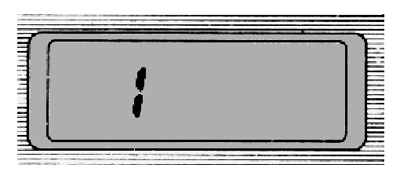
Experiencia: medir R1 con el óhmetro
Con MARCHA se prenden los leds del resistor R1 de la sección 1 y de COM y VΩ. Notá que no se prenden los de la batería.
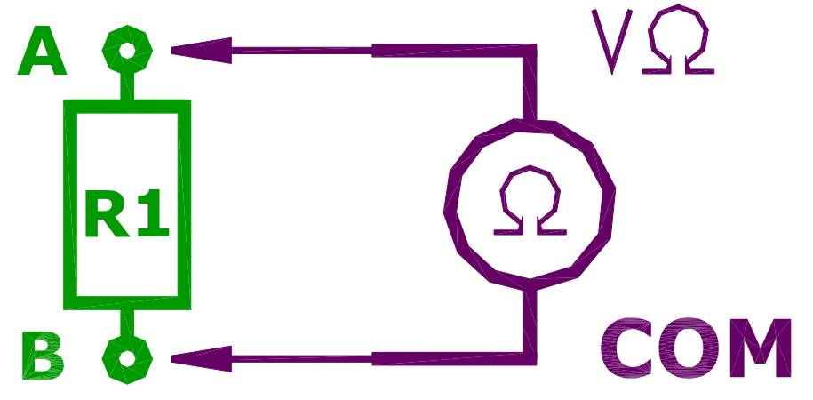
- ASelector en 200 Ω.
- BConectar A de R1 → VΩ y B de R1 → COM.
- CEncender y leer. Si hay desbordamiento, pasar al alcance siguiente.
- DComparar con el valor calculado en el punto I del paso 03.
- EConsultar al instructor las diferencias.
- FDesconectar todo y apagar el tester.
¿Por qué el valor medido y el calculado no coinciden exactamente? Son normales pequeñas diferencias:
- Cada medición (V, I y R) tiene su propio error de instrumento; en el cálculo del paso 03 se combinan dos errores.
- El amperímetro tiene una pequeña resistencia interna que modifica un poco la corriente del circuito.
- La resistencia de los cables y contactos se suma (lo ve el paso 05).
- Al circular corriente el resistor se calienta y su resistencia puede variar; el óhmetro mide con una corriente muy chica, en frío.
- La tensión de la batería puede variar un poco entre una medición y la otra.
PASO 05 La resistencia de las puntas de prueba
Una buena práctica antes de medir resistencias bajas.
Teoría
Como óhmetro, el tester usa su fuente interna (normalmente una batería de 9 V) para hacer circular una corriente de prueba por el componente. La resistencia de los cables y la de los contactos defectuosos de los conectores se suman al valor del componente.
Por eso, antes de medir —sobre todo en escalas bajas— conviene comprobar el estado de los cables: se unen las dos puntas y se mira qué indica el tester.
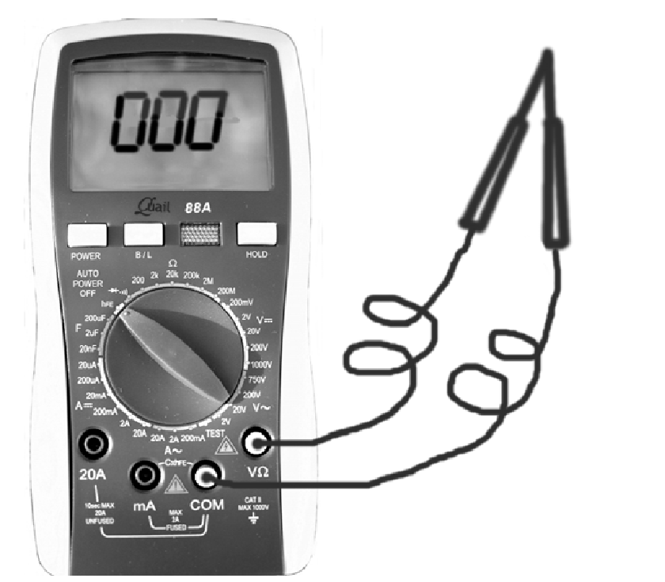
- Lo ideal es 0 Ω; una lectura de décimas de ohm es razonable.
- Ese valor se descuenta de lo que se mida después sobre el componente.
- Si supera 1 Ω, hay que revisar cables y conectores de las puntas.
- Algunos testers de buena calidad tienen ajuste de cero, manual o automático.
Ejemplo: con las puntas unidas leés 0,4 Ω y sobre el resistor leés 47,3 Ω. El valor real es 47,3 − 0,4 = 46,9 Ω. En un resistor de 100 kΩ esos 0,4 Ω no importan; en uno de 2 Ω son un 20 % de error.
Experiencia: medir R2, R3 y R4
Con MARCHA se prenden los leds de R2, R3 y R4 de la sección 1 y de COM y VΩ.
- ACon el mismo procedimiento del paso 04 (alcance chico, conectar, subir de escala si desborda), medir R2, R3 y R4 y anotarlos en orden. Recordá descontar el valor de las puntas.
- BInformar los valores al instructor.
- CDesconectar todo y apagar el tester.
PASO 06 Resistores variables: reóstato y potenciómetro
Cuando la resistencia se tiene que poder ajustar.
Teoría
Muchas aplicaciones necesitan un resistor cuyo valor se pueda variar a voluntad (un control de volumen, un sensor de posición de mariposa, un nivel de combustible). Se construyen distinto de los resistores fijos: tienen un cuerpo resistivo y un cursor que se desliza sobre él.
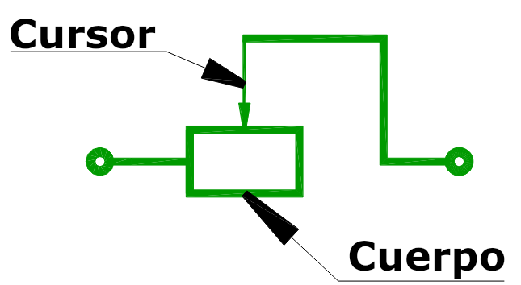
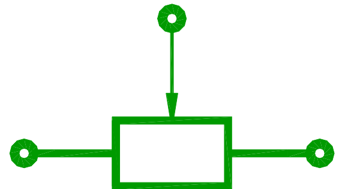
- Con 2 terminales (un extremo y el cursor) se llama REÓSTATO. Se usa típicamente para regular corriente.
- Con 3 terminales (los dos extremos A y B, más el cursor C) se llama POTENCIÓMETRO. Se usa típicamente para regular o tomar una fracción de tensión.
- Un potenciómetro se puede usar como reóstato usando solo un extremo y el cursor; por eso se fabrican con 3 terminales, son más versátiles.
| Entre terminales | Qué se mide | ¿Cambia al mover el cursor? |
|---|---|---|
| A – B | Resistencia total o nominal (el valor que da el fabricante) | No, es fija |
| A – C | Tramo entre un extremo y el cursor | Sí, de ≈ 0 al valor nominal |
| C – B | El tramo complementario | Sí, en sentido opuesto |
Siempre se cumple (A–C) + (C–B) = (A–B): lo que un tramo gana, el otro lo pierde.
En la consola hay dos potenciómetros en la sección 2: POTENCIÓMETRO 1, deslizante (lineal), y POTENCIÓMETRO 2, giratorio (rotativo).
Experiencia: los potenciómetros como reóstatos
Con MARCHA se prenden los leds de A y C de ambos potenciómetros y de COM y VΩ.
- AConectar A y C del POTENCIÓMETRO 1 a VΩ y COM, respectivamente.
- BTester como óhmetro en la escala más alta (no se conoce el valor) y encenderlo.
- CLeer la resistencia, ajustando la escala, con el cursor en el límite izquierdo, en el límite derecho y en posiciones intermedias.
- DConectar A y C del POTENCIÓMETRO 2 a VΩ y COM.
- ERepetir con el cursor en el límite de giro izquierdo, derecho e intermedio.
- FConsultar los valores con el instructor.
- GDesconectar todo y apagar el tester.
Qué deberías observar: en un extremo del recorrido la resistencia A–C es prácticamente 0 Ω (el cursor está sobre A) y en el otro es igual a la resistencia nominal (el cursor está en B). En las posiciones intermedias toma valores intermedios, que crecen a medida que el cursor se aleja de A. Como el rango es amplio, puede hacer falta cambiar de escala durante la medición.
PASO 07 Predecir la corriente con la Ley de Ohm
Calcular primero, medir después y comparar.
Teoría
Conociendo la resistencia de un componente podemos predecir qué corriente va a circular cuando le apliquemos una tensión. Partiendo de la relación del paso 03 y despejando (pasaje de términos):
| Ley de Ohm | Para calcular | Ejemplo |
|---|---|---|
| R = V / I | la resistencia | 12 V / 0,1 A = 120 Ω |
| I = V / R | la corriente | 12 V / 120 Ω = 0,1 A |
| V = R · I | la tensión | 120 Ω · 0,1 A = 12 V |
Si el despeje no te sale, el triángulo de la Ley de Ohm del manual lo resuelve tapando la letra que buscás.
Experiencia: R1 de la sección 3
Con MARCHA se prenden los leds de A y B de R1 de la sección 3, de + y − BATERÍA y de COM y VΩ.
- AMedir la resistencia de R1 (sección 3) con el óhmetro. Anotar.
- BMedir VBATERÍA con el voltímetro y calcular I = VBATERÍA / R1, cuidando las unidades.
- CArmar el circuito con el tester como amperímetro en serie (cambiar la punta roja al borne mA) y medir la corriente.
- DDesconectar todo y apagar el tester.
- EComparar el valor calculado (B) con el medido (C).
- FInformar el resultado al instructor.
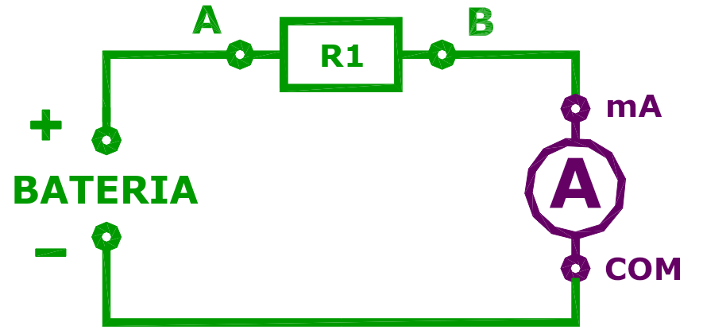
Atajo de unidades: volt dividido kiloohm da miliampere. Ejemplo ilustrativo: VBATERÍA = 12,4 V y R1 = 1 kΩ → I = 12,4 V / 1 kΩ = 12,4 mA (= 0,0124 A).
Resultado esperado: el valor medido debe quedar muy cerca del calculado. Esa coincidencia es la demostración práctica de que la Ley de Ohm sirve para predecir. Las pequeñas diferencias vienen de la tolerancia de las mediciones, la resistencia interna del amperímetro y la leve caída de tensión de la batería al entregar corriente.
PASO 08 Circuito serie: la corriente es la misma
Dos componentes en una misma rama.
Teoría: un ejemplo del auto
Es muy común conectar dos elementos uno a continuación del otro en una misma rama. El ejemplo de la guía es el circuito de ajuste de velocidad del motor del soplador de la ventilación forzada (el forzador de la calefacción/aire del auto):

La llave elige cuántos resistores quedan en serie con el motor. Según el esquema: en la posición 4 el motor va directo a la alimentación (máxima velocidad); en la 3 se intercala R1; en la 2, R1 + R2; en la 1, R1 + R2 + R3 (mínima velocidad); la 0 es apagado. Más resistencia en serie → menos corriente → el motor gira más despacio.

Para recordar
- En un circuito serie los componentes están conectados en una misma rama, uno a continuación del otro.
- La corriente que los recorre es la misma en todos ellos: no hay otro camino por donde se pueda ir.
- La resistencia total es la suma: Rtotal = R1 + R2, y la corriente es I = V / (R1 + R2).
Experiencia: medir la corriente en tres puntos
Con MARCHA se prenden los leds de A y B de R2 y R3 de la sección 1 y de COM y mA.
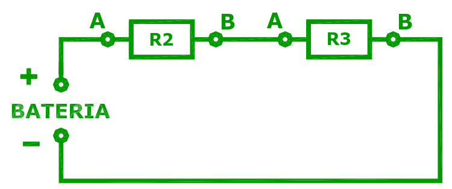
- AArmar el circuito serie de la figura.
- BSelector en 200 mA⎓.
- CPunto 1 — antes de R2: levantar la conexión de A de R2; conectar + BATERÍA → mA y COM → A de R2.
- DEncender, leer I (cambiar de rango si hace falta) y anotar.
- EPunto 2 — entre R2 y R3: restablecer + BATERÍA con A de R2; abrir la unión entre R2 y R3 y conectar B de R2 → mA y A de R3 → COM.
- FLeer y anotar como en D.
- GPunto 3 — después de R3: restablecer la unión B de R2 – A de R3; levantar la conexión de B de R3 y conectar B de R3 → mA y COM → − BATERÍA.
- HLeer y anotar como en D.
- IDesconectar todo y apagar el tester.
- JComparar D, F y H y justificar.
Justificación de J: las tres lecturas dan el mismo valor (salvo diferencias mínimas del instrumento). En un circuito serie la corriente no «se gasta» al pasar por los resistores: los electrones que entran por un extremo de la rama son los mismos que salen por el otro. Lo que sí cambia de un punto a otro es la tensión, que es el tema del paso 09.
Fijate que en cada caso hay que abrir el circuito en un punto e intercalar el amperímetro ahí: es lo que significa «conectar en serie».
PASO 09 Circuito serie: las tensiones se reparten
La segunda regla de Kirchhoff y por qué el soplador gira más lento.
Teoría
Volvemos al circuito simplificado del soplador: un resistor R1 en serie con el motor. ¿Para qué se pone ese resistor? Para verlo, se reemplaza el motor por un resistor de valor parecido a la resistencia del motor: R2 de la sección 1 hace de «motor».
Experiencia: medir tensiones en el circuito serie
Con MARCHA se prenden los leds de A y B de R1 y R2 de la sección 1, COM y VΩ del tester y + y − BATERÍA.

- AArmar el circuito. R2 representa al motor.
- BSelector en 20 V⎓: se mide tensión continua.
- CPuntas en + y − BATERÍA → anotar VBATERÍA.
- DPuntas en A y B de R1 → anotar VR1.
- EPuntas en A y B de R2 → anotar VR2.
- FDesconectar todo y apagar el tester.
- GReemplazar los valores en VBATERÍA = VR1 + VR2.
- HVerificar que se cumple. Si no, consultar al instructor.
A diferencia del paso 08, acá no hay que abrir el circuito: el voltímetro se apoya en paralelo sobre cada componente.
2ª regla de Kirchhoff (ley de las tensiones)
- «En un circuito serie, la suma de las tensiones aplicadas a cada componente es igual a la tensión aplicada en los extremos de la rama.»
- VBATERÍA = VR1 + VR2
- Cada resistor se lleva una parte proporcional a su resistencia: VR1 = I · R1, VR2 = I · R2. El de mayor resistencia recibe más tensión.
Ejemplo con valores ilustrativos: VBATERÍA = 12 V, R1 = 100 Ω, R2 = 200 Ω.
Rtotal = 300 Ω → I = 12 / 300 = 0,04 A = 40 mA (la misma en R1 y R2, como vimos en el paso 08).
VR1 = 0,04 · 100 = 4 V · VR2 = 0,04 · 200 = 8 V · Suma: 4 + 8 = 12 V ✓
En la práctica la suma de las lecturas puede diferir en alguna centésima por redondeo y precisión del tester; eso es normal.
Conclusión: para qué sirve R1 en el soplador
Como la tensión de la batería se reparte entre R1 y el motor, el motor recibe solo una fracción de la tensión. Con menos tensión gira más despacio y sopla menos. Eligiendo distintos valores de resistencia en serie (las posiciones de la llave del paso 08) se obtienen distintas velocidades del motor.
Resumen rápido de los pasos
Qué se mide, cómo se conecta el tester y qué te tiene que quedar.
| Paso | Tema | Selector | Bornes | Conexión | Idea clave |
|---|---|---|---|---|---|
| 00 | Encendido | — | — | — | PASO 88 = prueba de leds; RESET vuelve al inicio; cuidar clavijas y cables. |
| 01 | Tensión | V⎓ 20 | VΩ · COM | Paralelo | Elegir el menor alcance que no desborde; «1» = fuera de rango; signo − = polaridad invertida. |
| 02 | Corriente | A⎓ 20 | 20A · COM | Serie | Empezar siempre por el alcance más alto; la escala de 20 A no tiene fusible. |
| 03 | Ley de Ohm | A⎓ 20 / 200m · V⎓ 20 | 20A/mA · VΩ · COM | Serie y paralelo | R = V / I — la tensión es la causa, la corriente el efecto. |
| 04 | Óhmetro | Ω 200 ↑ | VΩ · COM | Componente sin tensión | Subir de alcance hasta que no desborde; medir siempre sin alimentación. |
| 05 | Puntas | Ω 200 | VΩ · COM | Puntas unidas | Descontar la resistencia de las puntas; si supera 1 Ω, revisar cables. |
| 06 | Potenciómetros | Ω máx ↓ | VΩ · COM | A y C | Reóstato = 2 terminales; potenciómetro = 3; A–C varía de 0 al nominal. |
| 07 | Predecir I | Ω · V⎓ · mA | VΩ / mA · COM | Serie | I = V / R: el valor calculado coincide con el medido. |
| 08 | Serie: corriente | A⎓ 200m | mA · COM | Serie, en 3 puntos | La corriente es la misma en todo el circuito serie. |
| 09 | Serie: tensión | V⎓ 20 | VΩ · COM | Paralelo a cada R | VBAT = VR1 + VR2 (2ª regla de Kirchhoff). |
Reglas de oro del tester
- Voltímetro en paralelo, amperímetro en serie, óhmetro sin tensión.
- Punta negra siempre en COM; la roja cambia de borne según la función (VΩ, mA o 20A).
- Si no conocés el valor, empezá por el alcance más alto (en corriente es obligatorio para no quemar el fusible).
- Para cambiar de función, desconectá una punta primero.
- Antes de dividir o multiplicar, pasá todo a V, A y Ω. Repasá la tabla de prefijos si hace falta.
Autoevaluación
Pensá la respuesta y después abrí cada pregunta.
1. Con el selector en V⎓ 2 y la batería de 12 V, el display muestra «1». ¿Qué significa?
Desbordamiento: el valor (12 V) supera el máximo del alcance (1,999 V). No es una lectura de 1 V. Hay que subir al alcance de 20 V.
2. ¿Por qué en 20 V se lee 12,xx V y en 200 V solo 12,x V?
Porque el display tiene una cantidad fija de dígitos. En 200 V tiene que poder mostrar hasta 199,9, así que queda un solo decimal: se pierde precisión.
3. ¿Qué indica el signo «−» delante de la lectura de tensión?
Que las puntas están invertidas: el borne COM está en el punto de mayor potencial. El valor absoluto es correcto.
4. ¿Por qué se empieza a medir corriente en la escala de 20 A?
Porque no se conoce el valor. Si la corriente fuera mayor que la escala elegida (por ejemplo, 200 mA), se quemaría el fusible del tester. Después, si la corriente es menor a 0,2 A, se baja a 200 mA para ganar precisión.
5. ¿Cuál es el sentido convencional de la corriente y por qué se usa?
Del borne positivo al negativo por el circuito exterior. Se adoptó antes de conocer el átomo, suponiendo que circulaban cargas positivas, y se mantuvo por convención. Los electrones en realidad se mueven al revés.
6. Medís V = 6 V e I = 30 mA sobre un resistor. ¿Cuánto vale R?
30 mA = 0,03 A → R = 6 / 0,03 = 200 Ω.
7. ¿Por qué hay que desconectar un componente de la fuente antes de medir su resistencia?
Porque el óhmetro mide inyectando una corriente con su propia pila interna. Una tensión externa falsea la medición y puede dañar el instrumento. Además, si el componente sigue conectado a otros, se mide el conjunto.
8. Con las puntas unidas leés 0,3 Ω y sobre un resistor 22,5 Ω. ¿Cuál es su valor?
22,5 − 0,3 = 22,2 Ω. Si con las puntas unidas leyeras más de 1 Ω, habría que revisar cables y conectores.
9. ¿Qué diferencia hay entre un reóstato y un potenciómetro?
El reóstato tiene 2 terminales (un extremo y el cursor) y se usa para variar una resistencia o regular corriente. El potenciómetro tiene 3 (los dos extremos y el cursor) y se usa para tomar una fracción de tensión. Un potenciómetro usado con solo A y C funciona como reóstato.
10. Una batería de 12,5 V alimenta un resistor de 2,5 kΩ. ¿Qué corriente circula?
I = 12,5 V / 2,5 kΩ = 5 mA (= 0,005 A).
11. En el paso 08, ¿por qué las tres lecturas de corriente son iguales?
Porque en un circuito serie hay un solo camino: toda la corriente que pasa por R2 tiene que pasar por R3 y volver a la batería. La corriente es la misma en cualquier punto de la rama.
12. En un circuito serie VBATERÍA = 12 V y VR1 = 4,5 V. ¿Cuánto vale VR2?
Por la 2ª regla de Kirchhoff: VR2 = 12 − 4,5 = 7,5 V.
13. ¿Para qué se conecta un resistor en serie con el motor del soplador?
Para que se reparta la tensión: el resistor se queda con una parte y el motor recibe solo una fracción de la tensión de la batería, entonces gira más despacio. Con distintos valores de resistencia se obtienen distintas velocidades.